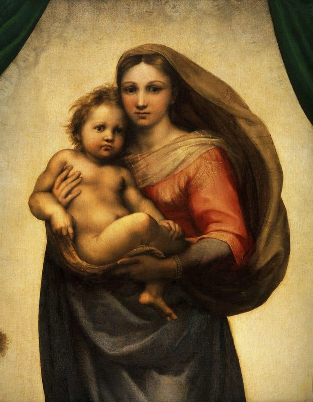
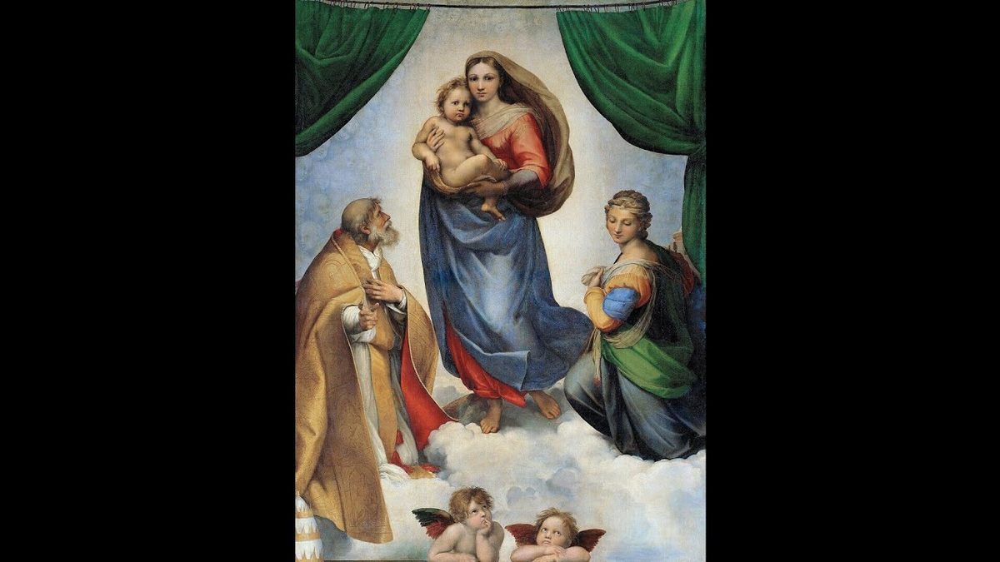
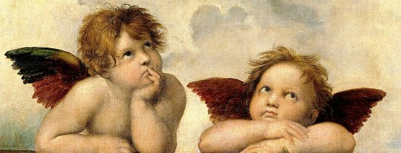
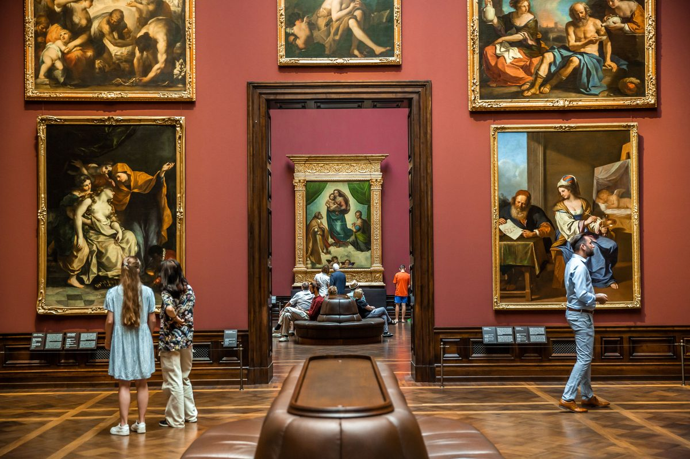

El encargo pontificio

En 1512, el papa Julio II —el mismo que encargó a Miguel Ángel la bóveda de la Capilla Sixtina— comisionó a Rafael una gran pintura para el altar mayor de la iglesia de San Sisto en Piacenza, una ciudad que acababa de regresar bajo control papal. La iglesia estaba dedicada al papa mártir Sixto II (s. III), y la obra debía servir también como monumento funerario para el propio Julio II, que falleció en 1513, un año después de que el cuadro fuera terminado.
Rafael pintó una imagen que rompía con todos los precedentes: no una Madonna estática sobre un trono sino una aparición dinámica, una Virgen que desciende literalmente del cielo hacia el espectador.
«¿A quién debo yo que la madre de mi Señor venga a visitarme?»
La composición: María desciende del cielo

La escena está enmarcada por dos cortinas verdes que se abren como el telón de un teatro: el cielo se convierte en escenario. María avanza hacia el espectador, descalza sobre nubes luminosas, con el Niño Jesús en brazos. A su derecha, san Sixto —caracterizado con los rasgos de Julio II, según la tradición— señala con el dedo índice hacia el exterior del cuadro, en dirección a los fieles que contemplaban la obra desde la nave de la iglesia. A su izquierda, santa Bárbara baja los ojos con humildad.
La mirada de María es uno de los mayores enigmas del arte occidental: sus ojos no miran directamente al espectador sino levemente de lado, como si viera algo más allá de lo visible. El Niño Jesús, en cambio, nos mira de frente con una intensidad adulta, grave, que contrasta con la ternura de su cuerpo infantil. Es la mirada de quien ya conoce su destino.
Los dos querubines: el detalle más reproducido del arte

En el borde inferior del cuadro, apoyados sobre la base de la escena y con la mirada elevada hacia María, dos pequeños ángeles —querubines o putti— son hoy la imagen artística más reproducida de la historia: en tarjetas postales, tazas, camisetas, portadas de libros, calendarios. Su aire de curiosidad soñadora, con una mejilla apoyada sobre el puño, ha trascendido completamente el contexto religioso para convertirse en un ícono visual universal.
Lo que pocos saben es que Rafael los añadió como elemento secundario, casi improvisado, para no dejar el borde inferior de la composición vacío. Lo que iba a ser un detalle marginal se convirtió en lo más célebre de la obra.
De Piacenza a Dresde: la historia de la obra

La Madonna Sixtina permaneció en la iglesia de San Sisto de Piacenza durante más de dos siglos, venerada como imagen de culto. En 1754, el elector Augusto III de Sajonia la adquirió por 25.000 ducats —una suma astronómica para la época— y la trasladó a Dresde, donde entró en la colección real. Desde entonces se exhibe en la Gemäldegalerie Alte Meister, que fue construida expresamente para albergarla.
Durante la Segunda Guerra Mundial, la pintura fue escondida en una mina de Königstein para protegerla de los bombardeos. En 1945, las tropas soviéticas la localizaron y la trasladaron a Moscú, donde permaneció en depósito secreto durante diez años. En 1955 fue devuelta a Dresde por el gobierno soviético como gesto diplomático hacia la República Democrática Alemana.
Significado mariano
La Madonna Sixtina capta una verdad teológica central: María es el punto de encuentro entre el cielo y la tierra. No se trata de una mujer que asciende a Dios, sino de Dios que desciende a la humanidad a través de ella. Las cortinas que se abren son el velo del Templo rasgado: la presencia divina ya no está oculta sino visible, accesible, sostenida en brazos de una madre joven.
La expresión de María —a la vez serena y ligeramente temerosa, consciente de lo que porta— es la imagen más exacta del fiat mariano: un sí pleno y al mismo tiempo humano, que no escamotea la gravedad de lo que significa ser Madre de Dios.